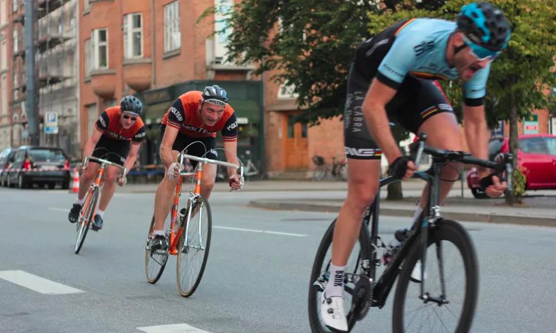
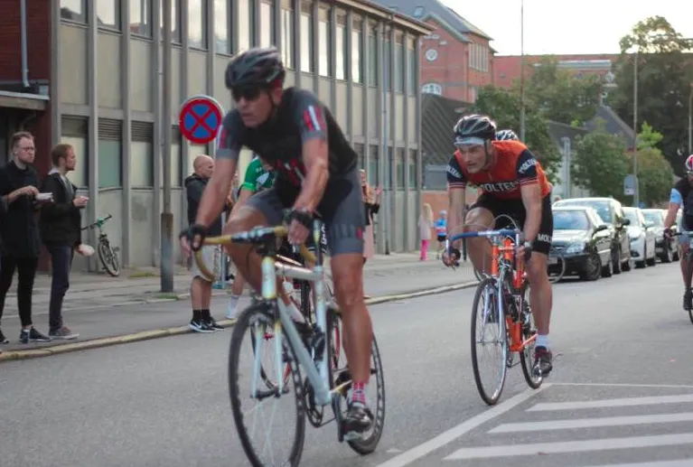

Konspirationernes boulevard

G.S. Velopresse afholder 31. august 2017 det berygtede GRAND PRIX G.S. VELOPRESSE på Ingerslev Boulevard – midt imens Squadra Moltenis kaptajn og løjtnant kører Vuelta a Espana med Pastor Mogensen som sportsdirektør
Konspiration
Det er én stor konspiration. Chefen og Kaptajnen fra G.S. Velopresse ved udemærket godt, at Kasper og jeg er udtaget til at køre Vuelta a Espana. Derfor har de rykket deres klassiske kamikaze kriterium en uge frem, siger en skuffet Kaptajn Bjørnsteen
Sidste år stillede Squadra Molteni et rystende stærkt hold ved GRAND PRIX G.S. VELOPRESSE, hvor Kaptajn Bjørnsteen lagde ud som torden og lynild – og gik i udbrud allerede på første omgang foran hele den danske elite.
Bange for os
Vi har lagt vore sæson tilrette efter at komme til GRAND PRIX G.S. VELOPRESSE i absolut topform. Vi ville have kommet direkte fra krævende bjergetaper i Sierra Nevada med en hæmatokrit tæt på de 60. Men G.S. Velopresse er åbenbart bange for os. Bange for, at vi vil komme og løbe med det hele: sejren, kyssene og præmiepigerne, siger Løjtnant Kasper Sørensen.

Grane Supersprinter har fundet 250 watt ekstra
Selvom Kaptajnen og Løjtnanten ikke kommer og gør Ingerslev Boulevard usikker, så stiller Squadra Molteni sikkert et sviende stærkt hold.

Vores supersprinter Grane Maaløe er i topform, og efter et besøg hos Dr. Cecchini, har han netop funder 250 ekstra watt, som han kan fyre af oveni de 2500 watt han træder i en spurt. Svend Seegert er mere end klar til at kaste den knaldrøde SCO rundt i svingene på Ingerslev Boulevard. Og flere Squadra Molteni-ryttere er ved at gøre formen klar til GRAND PRIX G.S. VELOPRESSE – også kaldet VM i koldstart, fortæller Kaptajn Bjørnsteen
DeliSprinten/Sprint69 konspireret væk
G.S. Velopresse har de seneste 2 år afholdt en hard-core sprint på Nordre Strandvej, Århus. Her var Squadra Moltenis supersprinter Grane Maaløe begge år i finalen. Begge år blev Grane meget tvivlsomt slået i den afgørende finale.
I år var Grane mere end klar til at smadre alt og alle. Men af frygt for, at Squadra Moltenis supersprinter ville komme og løbe med sejren, har G.S. Velopresse konspireret hele sprintstævnet væk!